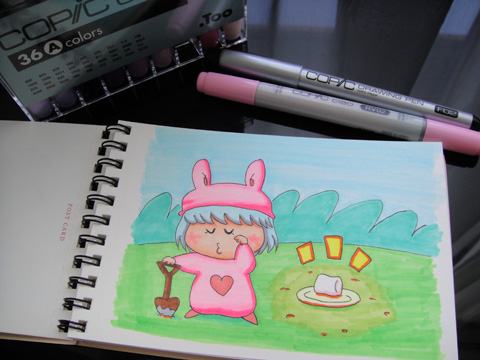
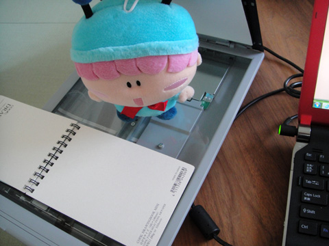
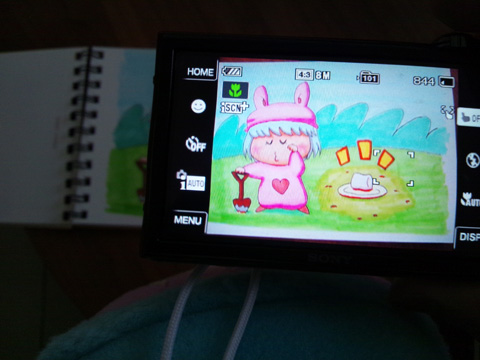
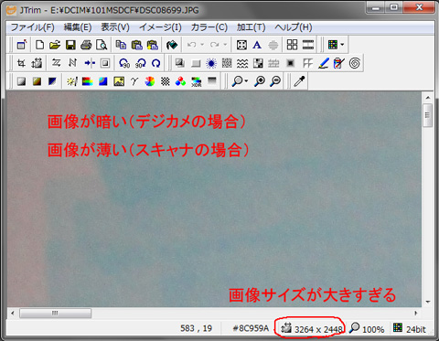
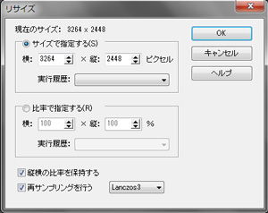
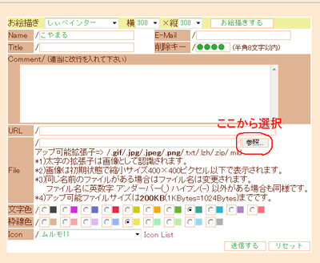
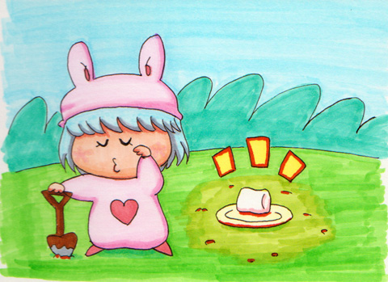

掲示板で話題に上がった、手描きイラストを掲示板に投稿する方法について、説明したいと思います。
手順を簡単にまとめると
①手描きイラストを描く
②PCに取り込む（スキャナやデジカメを使って）
③画像の大きさや色合いを調整する
④掲示板に投稿する
の順番になります。
でも環境や機材は人それぞれなので、全員にぴったり当てはまる説明は難しいんですよ。今回は店長ムルモさんががんばって説明を行いますので、皆さんもぜひがんばってみてください。
①手描きイラストを描く
色鉛筆でも絵の具でも、何でもOKでしゅよ。
後の手順を考えて、小さすぎず、大きすぎずのサイズ（A4サイズ以下が目安）で描くのがいいでしゅね。
ボクはコピックを使って何だかよく分からない絵を描いてみたでしゅ。

コピックは色のムラを無くすのが難しい・・・
②PCに取り込む
スキャナまたはデジカメで。デジカメだとほんの少し歪むので、出来ればスキャナを使うのがいいでしゅね。
スキャナの使い方は、取り込みボタン押すだけで取り込めるはず…。まっすぐ水平に取り込めるまで、何度でも再チャレンジするでしゅ。うまく取り込めたら、jpg形式で画像ファイルに保存でしゅ。

正確に取り込むならスキャナでしゅね
デジカメの場合は、角度かつかないよう、絵の真上から撮影してくだしゃいね。撮影が終わったら、SDカードをPCに読み込ませるか、デジカメをPCにつなぐなどして、写真のデータをPCにコピーするでしゅ。

ピンぼけにも注意でしゅ
③画像の大きさや色合いを調整する
このままだとサイズが大きすぎて、掲示板に投稿するとエラーになるでしゅ。ここではJTrimというフリーソフトを使って調整するでしゅ。
（※掲示板ではファイルサイズ=200KB未満の投稿制限あり）

JTrimの画面
「イメージ」→「リサイズ」を選んで、画像のサイズを縦横600～800ピクセルくらいに縮小するでしゅ。

取り込んだ画像は、スキャナだと色が薄く、デジカメだと色が暗く出てしまうので、カラーメニューで調整するのも良いでしゅよ（やり過ぎに注意）。
・スキャナの場合 「ガンマ補正」でガンマ値を少し下げる
・デジカメの場合 「明るさ／コントラスト」で両方の値を上げる
④掲示板に投稿する
あとは掲示板の「File」欄から「参照」を選び、出来上がった画像ファイルを選択して投稿するだけでしゅ～。


これで完了でしゅ♪
説明は以上になります。
分からないことがあれば掲示板でお気軽にご質問くださいね。
(2011/9/11)